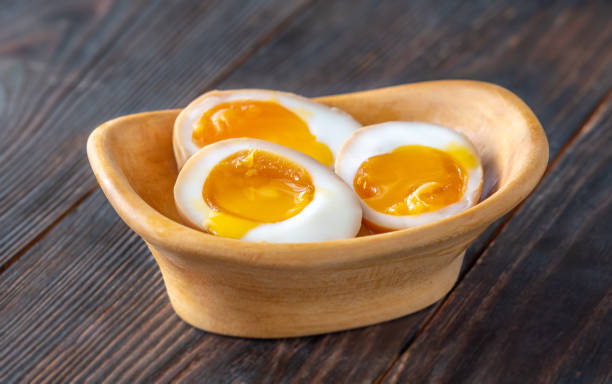
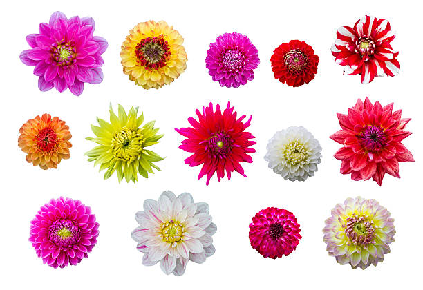
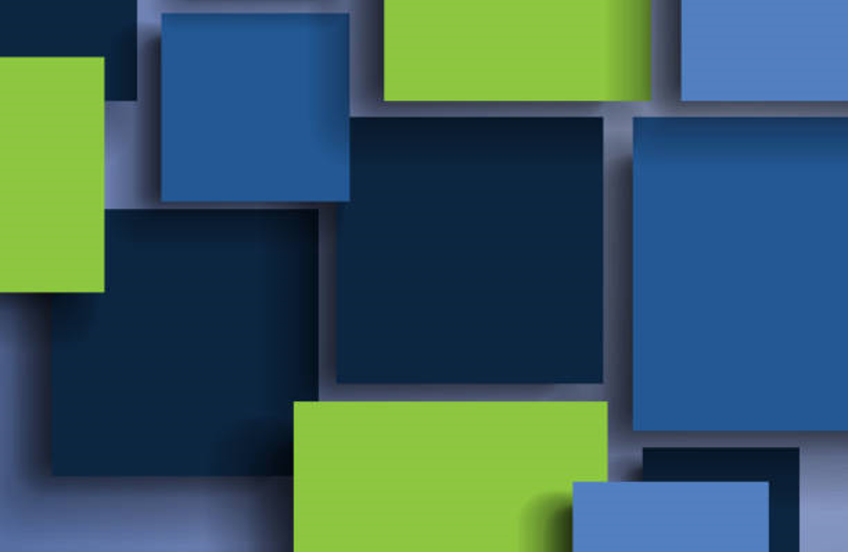
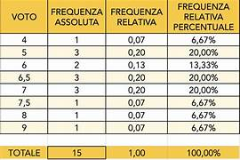
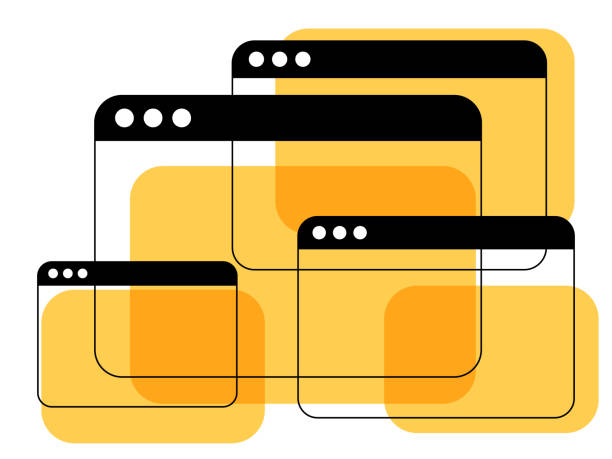
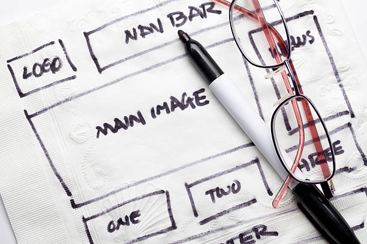
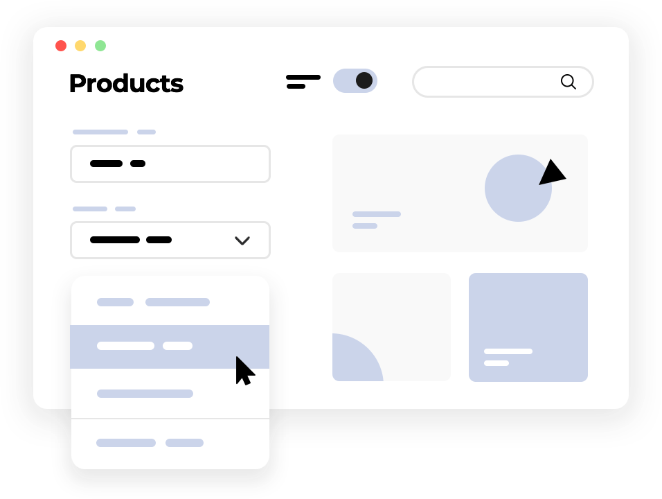
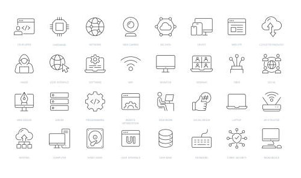
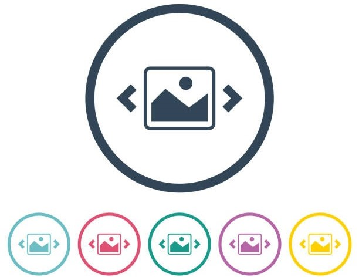

Qui di seguito sono esposte tutte le pagine web che ho realizzato durante il terzo anno

In questo sito viene presentata una ricetta di cucina e un form contenente vari tipi di input. Utilizzo elementi base come paragrafi, liste, immagini, form e link
Realizzato con HTML

In questo sito sono presenti alcune immagini di fiori che fungono da link per le relative pagine web. Utilizzo elementi base come tabelle e link

In questo sito sono presenti due box item formattati all'interno di un box contenitore. Utilizzo proprietà dei box div come margin, padding, border, background-color, width e height
Realizzato con HTML e css

In questo sito è presente una tabella formattata contenente i voti di alcuni alunni in varie materie. Utilizzo proprietà delle tabelle come margin, padding, border, background-color

In questo sito sono presenti un box come header, tre box flottanti al centro e un altro come footer. Utilizzo proprietà come float e clear

In questo sito è presente il layout base per una generica pagina web con un header, il contenuto centrale, due sidebar e un footer. Utilizzo di tutte le competenze precedenti

In questo sito è presente il wireframe della pagina web precedente con una navigation bar e dei dropdown menù. Creazione di una navigation bar e dei dropdown menù

In questo sito è presente il wireframe della pagina web precedente con l'aggiunta di alcune icone, una favicon e uno sprite. Utilizzo delle icone fontawesome, di una favicon e uno sprite

In questo sito è presente uno slideshow/carousel di quattro immagini rappresentati gli indirizzi dell'ITIS Cannizzaro. Creazione di un carousel e utilizzo delle classi di bootstrap
Realizzato con Bootstrap 5